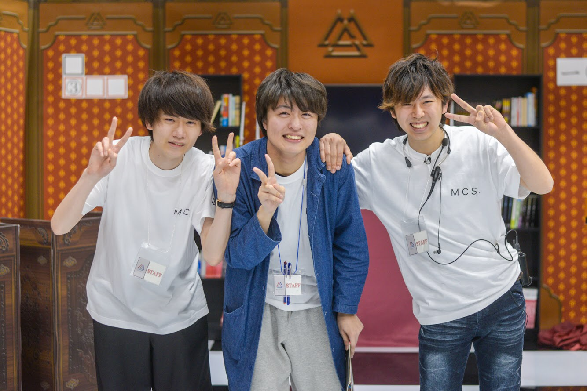

Comment
新入生のみなさん、ご入学おめでとうございます！今年度MCS代表の小泉七星(こいずみ ななせ)です。 MCSでは様々なメディアを通して、高槻キャンパスを盛り上げることを目的に日々活動しています！映像やイラスト、音楽など自分の好きや楽しいを形にできるのが１番の魅力です！ 本格的な機材に触れ、初めてに挑戦することで新たな自分を見つけることができます。ぜひ一度遊びに来てください！MCS一同、皆さんに会えることをお待ちしています！！
How to enter
スタジオ見学会

活動で使用している高槻キャンパスのスタジオが見学可能です。これを機にスタジオの雰囲気を見てみてください！ 他にも、新生活の不安やサークル・団体について相談できるブースも用意して待ってます！
おかしパーティ

飲み会よりももっと気軽に交流できる機会を設けました！参加費不要ですので、お菓子食べたいなぐらいの気持ちで来ていただければ嬉しいです！
入団説明会・ご飯会

リーダーから、MCSについての話や入団方法などの具体的な説明をします！その後にご飯会を開催する予定です。もっと深い話が聞けるかも？！
Details
企画
映像コンテンツを作る際、まず企画を立ち上げてそれを練ります。ドラマやバラエティなどジャンルを問わず企画するチャンスが団員全員にあるので、こんなことやりたい！というあなたの案が形になるかも？
収録・編集

次にそれを収録して、編集します。地方テレビ局レベルのスタジオや、プロも用いる編集ソフトといった本格的な機材を用いて作業するため、将来メディア系の職業に就きたいと考えている人にはもってこいの環境です！
宣伝

最後に、作った作品をCMなどで宣伝します。MCSのTwitterやWebサイトなどで発表して、Youtubeで公開しています。 実際にWebサイトの運営もしいるので、プログラミングの勉強になりますし、どのようにすれば視聴率が上がるのかを考えるため広報力が身につきます！
Question and Answer
- 他のサークル活動と掛け持ちできますか？
- できます！いくつも掛け持ちしてる団員もいます。
- 機械オンチですが大丈夫ですか？
- 講習を受けるので大丈夫です！先輩方から優しく教えてもらえます。
- 団員数と男女比はどんな感じですか？
- 2019年度秋学期の時点で合計126人います。
(男子65人 女子61人)
- パソコンって必要ですか？
- 基本的には学校内のパソコンで作業できるので必需品ではないです。
入学してすぐではなく、学校生活に慣れてから検討する方がいいと思います。
- 普段の映像制作以外にはどんな活動がありますか？
- 関西大学体育会KAISERSを盛り上げるべくその試合を中継・ハイライト制作を行ったりするKAISERS TVというグループがMCS内にあります。スポーツや中継に興味のある人お待ちしてます！